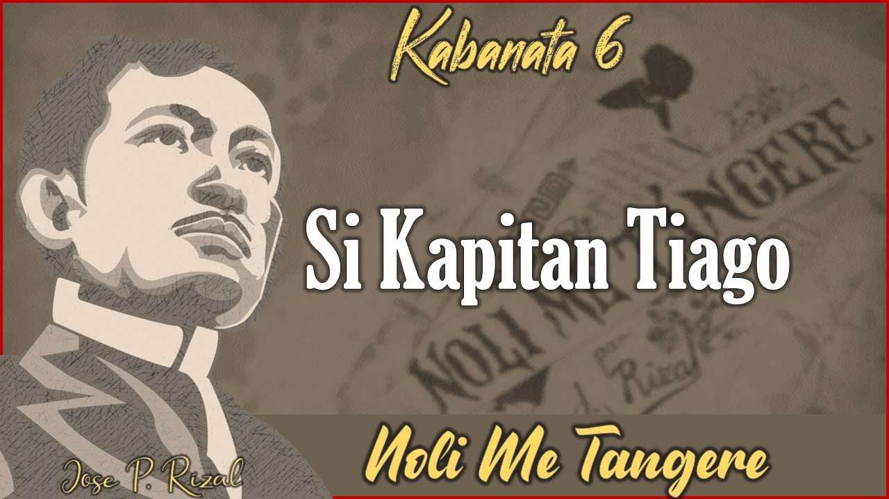
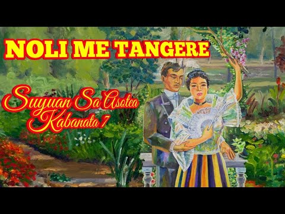
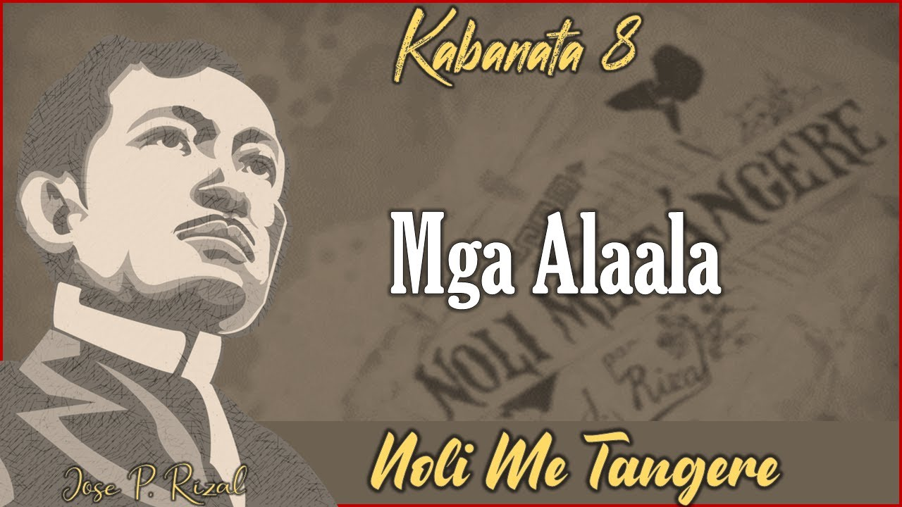
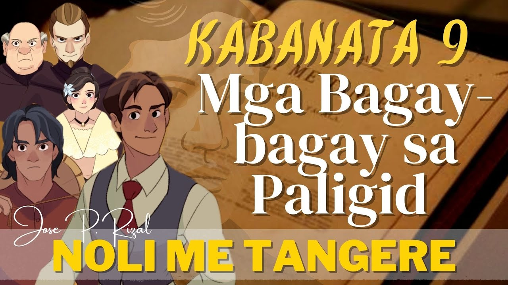
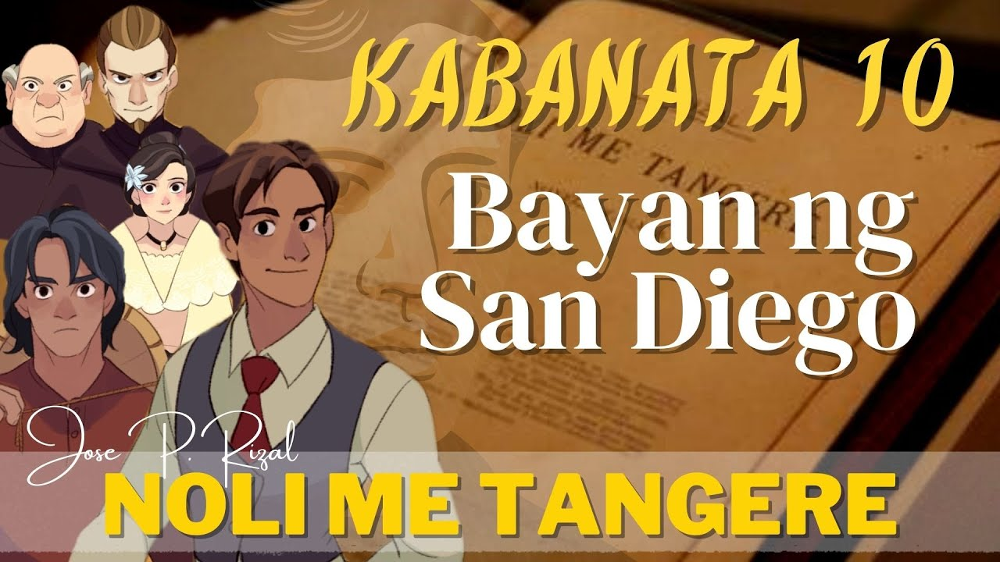

Noli Me Tángere
Kabanata VI
Si Kapitan Tiago

Ang kabanata Anim ng Noli Me Tangere ay pinamagatang "Si Kapitan Tiyago". Sa kabanatang ito, ipinakilala nang husto ang karakter ni Kapitan Tiyago, ang mayamang kaibigan ni Don Rafael Ibarra at ama ni Maria Clara.
Naglalarawan si Rizal kay Kapitan Tiyago bilang isang mayamang indio na nakatira sa Intramuros, at kilalang-kilala sa kanyang pagiging malambing, mapagbigay, at mahilig sa mga handaan. Ipinakilala rin sa kabanata ang ilan sa mga tauhan ni Kapitan Tiyago, tulad ng kanyang alila na si Victoria at ang kanyang katulong na si Andeng.
Sa kabanata, nag-organisa si Kapitan Tiyago ng isang handaan para sa mga paring Dominikano na nagmula sa Europa. Nagpakitang-gilas din dito si Padre Damaso sa kanyang panunuyo kay Maria Clara, pati na rin ang pagkakaroon ng hidwaan sa pagitan niya at ni Elias. Sa kabuuan, ang kabanatang ito ay nagbibigay ng mas malalim na pag-unawa sa karakter ni Kapitan Tiyago, ang kanyang papel sa lipunan, at ang kanyang mga kilos at gawi.
Noli Me Tángere
Kabanata VII
Suyuan sa Isang Asotea

Ang kabanata 7 ng Noli Me Tangere ay pinamagatang "Mga Unang Kabanata". Sa kabanatang ito, ipinakita ni Rizal ang mga mahahalagang pangyayari na naganap bago pa man nakabalik si Ibarra sa Pilipinas.
Nagsimula ang kabanata sa paglalarawan ng mga suliranin sa Pilipinas, kabilang na ang pang-aabuso ng mga prayle at ang kahirapan ng mga tao. Naging pangunahing tema rin ang edukasyon at ang mga pahirap sa pag-aaral ng mga Pilipino, pati na rin ang pagkakaroon ng magandang edukasyon sa Europa.
Nakilala rin sa kabanata si Don Santiago de los Santos o mas kilala bilang si Kapitan Tiago, na isang mayamang indio na magaling sa negosyo at nagmamay-ari ng malawak na lupain. Ipinakilala rin si Padre Damaso, ang mapanuring paring Pransiskano, at ang kanyang mga pang-aabuso sa mga Pilipino. Binanggit rin sa kabanata na namatay ang ama ni Ibarra, si Don Rafael Ibarra, na pinatay ng mga prayle dahil sa pakikibahagi niya sa isang pag-aalsa laban sa Espanya. Ipinakilala rin ang karakter ni Elias, isang mahusay na manggagamot at kaibigan ni Ibarra, pati na rin si Sisa, ang ina ni Basilio at Crispin. Sa kabuuan, ang kabanatang ito ay naglalagay ng kasaysayan at konteksto sa mga pangyayari sa nobela, pati na rin ang pagpapakilala sa mga mahahalagang karakter.
Noli Me Tángere
Kabanata VIII
Mga Alaala

Ang kalesang sinasakyan ni Ibarra ay masayang bumabagtas sa isang masayang pook sa Maynila. Ang kagandahan ng sinag ng araw ay nakakapagpapawi sa kaniyang kahapisang nadarama. Sa pagmamasid niya sa kapaligiran, biglang bumangon sa kaniyang nahihimlay na diwa ang isang alaala. Kabilang dito ang mga kalesa at karumatang hindi tumitigil sa pagbibiyahe, mga taong may ibat-ibang uri ng kasuotan na katulad ng mga Europeo, Intsik, Pilipino, mga babaing naglalako ng mga bungang-kahoy, mga lalakinh hubad na nagpapasan, mga ponda at restauran at pati ang mga karitong hila ng mga makupad na kalabaw. Pati ang bilanggong patay sa ilalim ng kariton at malapit sa dalawang bilanggo rin ay kaniyang naalala.
Sa patuloy na pagsusuyod ng kaniyang tingin, napansin niya na walang ipinagbago ang punong Talisay sa San Gabriel. Ang Escolta naman sa tingin din niya ay lalong pumangit. Nakita din niya ang mga magagandang karwahe na ang mga sakay ay mga kawaning inanatok pa sa kanilang mga pagpasok sa mga tanggapan at pagawaan, mga tsino at paring walang kibo. Sa mga paring nakasakay sa mga karwahe, namataan niya si Padre Damaso na nakakunot-noo. Si Kapitan Tinong noon na kasama ang asawa at dalawang anak na babae at nakasakay sa ibang karwahe ay binati si Ibarra. Napadaan din siya sa Fabrica de Tabacos de Arroceros (ngayon ay C.M. Recto) sa bahaging kinalalagyan ng pagawaan ng tabako. Naalala niya na minsan na siyang nahilo dahil sa masamang amoy ng tabako. Nang madaan siya sa Jardin Botanico saglit na napawi ang kaniyang mga magagandang gunita. Pumasok sa kaniyang isip na ang hardin sa Europa ay nakakaakit at nakapag-aanyaya sa mga ito upang iyon ay malasin. Itinoon niya ang tingin sa malayo at makita niya ang matandang Maynila na naliligid ng makakapal at nilumot ng mga pader.
Ang pagkakapatingin niya sa Bagumbayayn ay nagpabangon sa bilin ng kaniyang naging guring pari bago siya tumulak sa ibang bansa. Ang bilin ng pari ay (1) Ang karunungan ay para sa tao, ngunit ito ay natatamo lamang ng mga may puso lamang. (2) Kailangang pagayamanin ang karunungan upang maisalin ito sa mga susunod na salin-lahi at (3) ang mga dayuhan ay nagpunta sa Pilipinas upang humanap ng ginto. Kung kaya’t nararapat lamang na puntahan ang lugar ng mga dayuhan upang kunin naman ni Ibarra ang ginto nila (dayuhan).
Noli Me Tángere
Kabanata IX
Mga Bagay-bagay sa Paligid

May isang karwaheng nakatigil sa tapat ng bahay ni Kapitan Tiago. Ang nakasakay sa loob nito ay si Tiya Isabel at hinihintay na lamang na sumakay si Maria. Tiyempong dumating si Padre Damaso at tinanong ang mag-ale. Sinabi nilang kukunin ni Maria ang mga kagamitan nito sa Beaterio. Ang ganito ay hindi minabuti ng pari, bubulong-bulong na nagtuloy na nagtuloy siya sa bahay ni Tiago. Ang pagbulung-bulong ng pari ay inaakala ni Isabel na mayroon itong minimemoryang sermon.
Nahalata kaagad ni Kapitan Tiago ang pagbabagong anyo ng pari nang hindi nito iabot ang kamay nang magtangka siyang magmano rito. Sinabi ng pari na kailangang mag-usap silang sarilinan ni Kapitan Tiago. Pumasok sila sa isang silid at isinarang mabuti ang pinto.
Sa kabilang dako, pagkaraang makapagmisa si Padre Sibyla, kaagad na nagtuloy siya sa kumbento ng mga Dominiko sa Puerta de Isabel II. Dumiretso siya sa isang silid at tumambad sa kaniyang paningin ang anyo ng isang matandang paring may sakit. Sinigilahan siya ng matinding pagkaawa rito. Ikinuwento ni Padre Sibyla sa paring may-sakit ang tungkol sa naganap na pagkakaalitan nina Padre Damaso at ni Ibarra. Ipinaliwanag ni Padre Sibyla na si Ibarra ay taong mabait at mabuting tao. Ang dalawang pari ay nagpalitan ng mga kuru-kuro tungkol sa mayamang binata, kay Maria Clara at kay Kapitan Tiago. Sa kanilang pagsusuri, ang mga ito ay lubhang napakalaki ng maitutulong sa ikasusulong ng kanilang korporasyon at kapatiran ng panahong iyon. Sa paniniwala ng may sakit na pari, dahan-dahan ng nawawala ang kanilang mga kayamanan lalo na sa Europa dahil sa pagtaas ng buwis na nagiging dahilan ng pagkawala ng kanilang mga ari-arian. Hindi na nararapat, anya, ang pagtataas ng buwis sa kanilang mga lupain sapagkat ang Pilipino ay natututo ng mamili ng lupa sa iba’t ibang lugar at lumilitaw na kasimbuti rin ng sa kanila o higit pa.
Bago umalis si Padre Sibyla, naibalita rin niya na ang tenyente ay hindi rin nagsumbong sa Kapitan-Heneral at diumano, ito ay nakikiisa pa kay Padre Damaso. Pero, nalaman din ng kapitan ang buong pangyayari. Ito ay naibalita ni Laruja sa isang pahayagan. Si Padre Damaso ay napalipat pa sa higit na mabuting bayan. Sa kabilang banda naman, natapos na rin ang masinsinang pag-uusap nina Kapitan Tiyago at Padre Damaso. Sinisi ni Padre Damaso si Kapitan Tiago dahil sa hindi nito pagtatapat. Binalaan pa niya ang kapitan na kailanman ay huwag itong magsinungaling sa kaniya sapagkat siya ang inaama ni Maria Clara. Pag-alis ng pari, kaagad na pinatay niya ang mga ipinatulos na dalawang kandila kay Maria na patungkol para sa maluwalhating paglalakbay ni Ibarra patungong San Diego.
Noli Me Tángere
Kabanata X
Bayan ng San Diego

Ang San Diego ay isang karaniwang bayan sa Pilipinas na nasa isang baybayin ng isang lawa at may malalapad na bukirin at palayan. Karamihan sa nakatira rito ay mga magsasaka. Dahil sa kanilang kamangmangan, ang mga inaaning produkto agrikultura ay naipagbibili nila ng murang-mura sa tsino.
Mula sa pinakamataas na bahagi ng simboryo ng simbahan, halos natatanaw ang kabuuan ng bayan. Sa may itaas na bahagi, may kubo na sadyang itinayo. Gayunman, mapapansin sa pagtanaw sa kabuuan nito ang isang tila pulong gubat na nasa gitna mismo ng kabukiran.
Kagaya pa ng ibang bayan sa Pilipinas, ang San Diego ay mayroong itinatagong alamat. May isa umanong matandang kastila na dumating sa bayan. Ito ay matatas magsalita ng tagalog at nanlalalim ang mga mata. Binili niya ang buong gubat. Ang mga pinambayad niya ay mga damit, alahas at salapi. Hindi nagtagal ang matanda ay nawala.
Isang araw ang mga nagpapastol ng kalabaw ay nakaamoy ng masangsang na amoy. Hinanap nila ang pinanggalingan ng amoy at nakita nila ang nabubulok na bangkay ng matanda na nakabitin sa isang puno ng baliti.
Dahil sa pagkamatay ng matanda, lalo siyang kinatakutan sapagkat nung nabubuhay pa siya, takot na takot sa kaniya ang mga babae sa pagkat bahaw ang tinig nito, paimpit kung tumawa at malalalim ang mga mata. Sinunog ng ilan ang damit na galing sa matanda at ang mga hiyas naman ay tinapon sa ilog.
Hindi nagtagal, isang batang mistisong kastila ang dumating at sinabing siya ang anak ng namatay. Ito ay may pangalang Saturnino. Siya ay masipag at mapusok. Sininop niya ang gubat. Sa kalaunan, nakapag-asawa siya ng isang babaeng taga-Maynila at nagkaroon ng anak na tinawag niyang Rafael o Don Rafael, na siyang ama ni Crisostomo.
Si Don Rafael ay hindi malupit bagkus siya ay mabait. Ito ang dahilan kung bakit kinagiliwan siya ng mga magsasaka. Napaunlad niya ang lugar, mula sa pagiging nayon. Ito ay naging bayan.
Nagkaroon ng isang kura Indio. Pero, nang namatay si Padre Damaso na ang pumalit at naging kura pareho ng bayan.